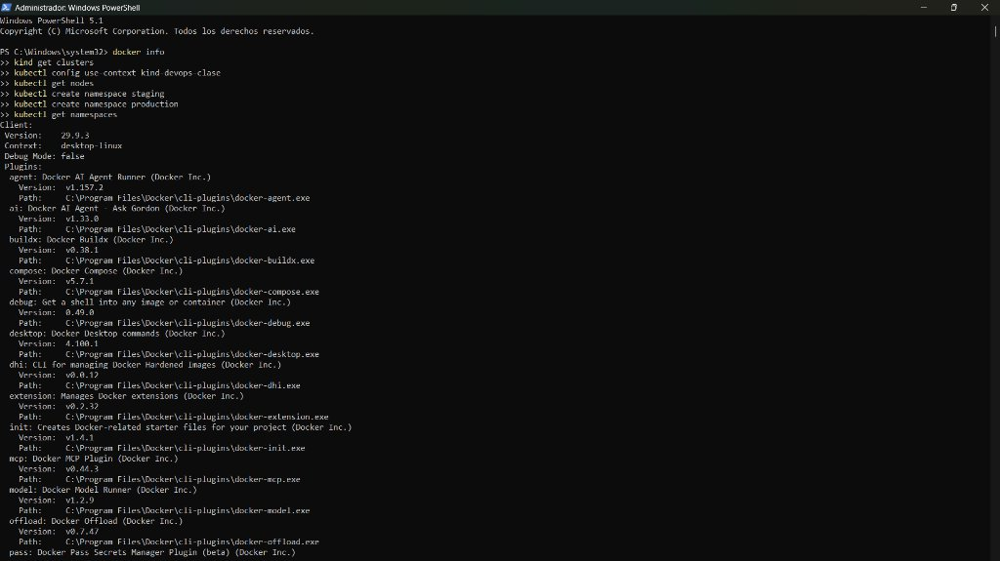
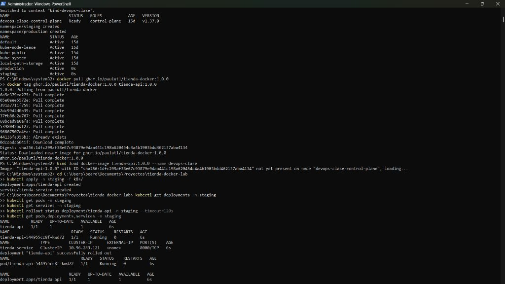
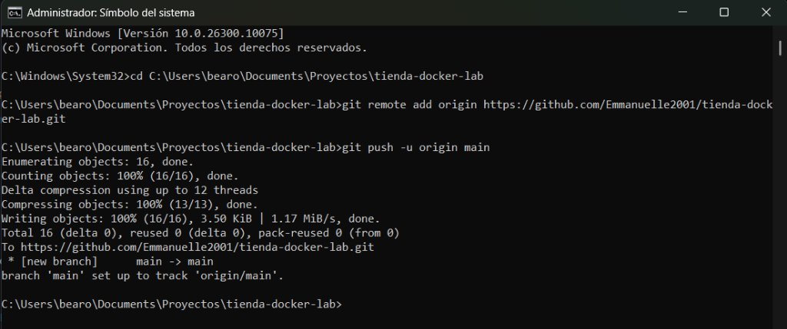
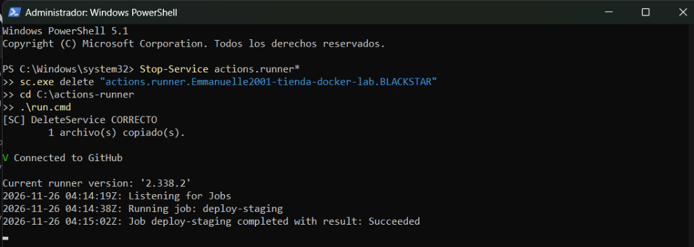
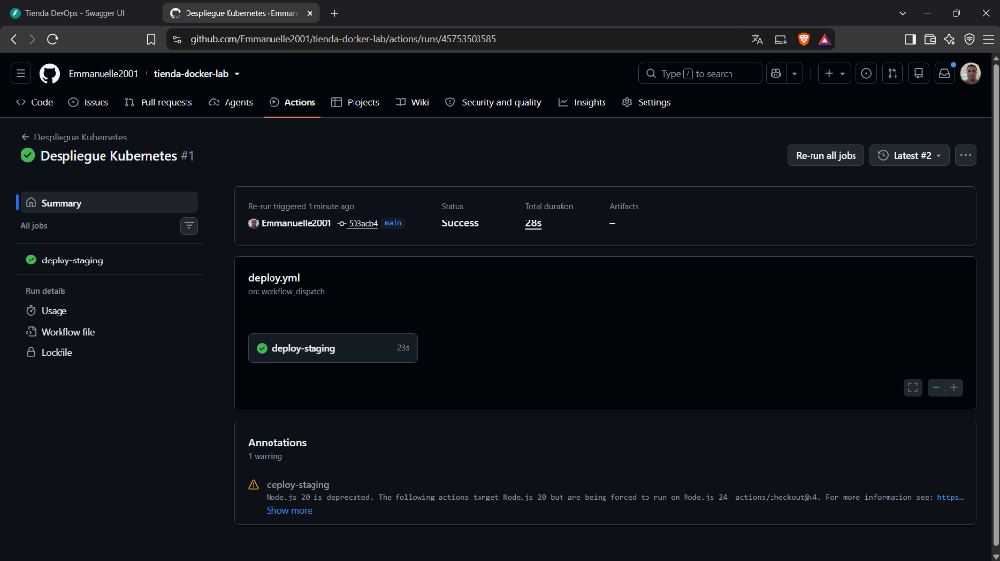
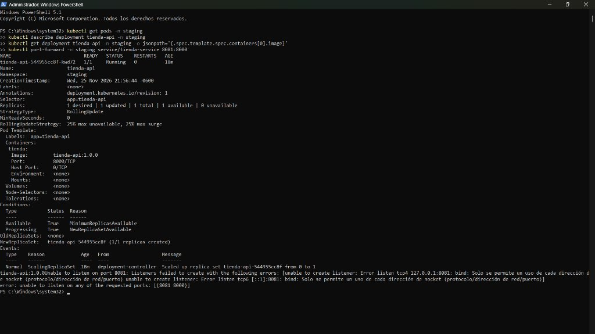
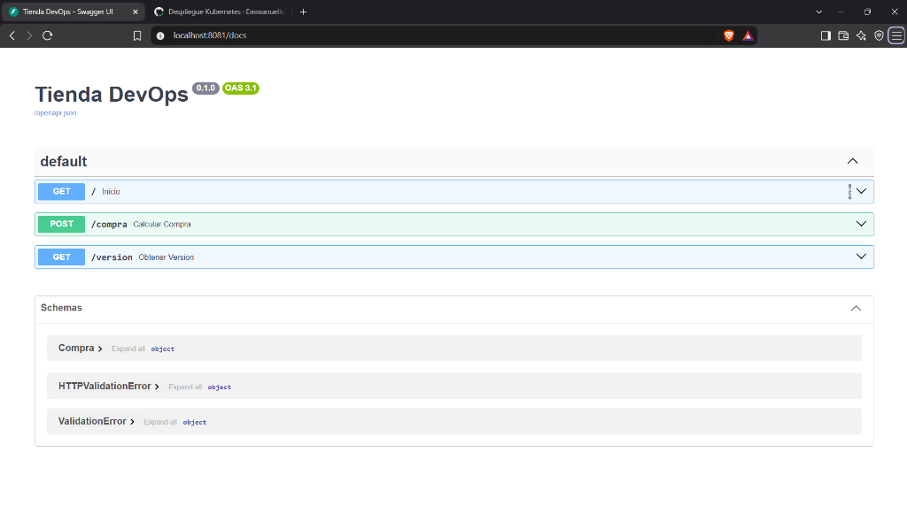

El objetivo de esta práctica es implementar un flujo de despliegue continuo (CD) hacia un clúster local de Kubernetes (Kind) gestionado directamente desde GitHub Actions. Para salvar la barrera entre la infraestructura pública en la nube de GitHub y el entorno local, se configura y utiliza un Runner Autohospedado (Self-Hosted Runner) ejecutándose en la máquina del desarrollador bajo Windows.
A través de este procedimiento, un evento de tipo workflow_dispatch permite disparar el despliegue automático de una versión específica de la aplicación Tienda API en el namespace staging, encargándose el runner de descargar la imagen desde el registro de contenedores, transferirla al nodo de Kind y actualizar los manifiestos de Kubernetes mediante kubectl.
Se comprobó la operatividad del motor de Docker y el clúster local kind-devops-clase, estableciendo la segmentación lógica del entorno mediante la creación de los namespaces staging y production:
docker info
kind get clusters
kubectl config use-context kind-devops-clase
kubectl get nodes
kubectl create namespace staging
kubectl create namespace production
kubectl get namespacesSe estructuraron los archivos declarativos dentro del directorio k8s para el controlador Deployment (1 réplica, contenedor tienda-api en puerto 8000) y el Service de tipo ClusterIP:
# k8s/deployment.yaml
apiVersion: apps/v1
kind: Deployment
metadata:
name: tienda-api
spec:
replicas: 1
selector:
matchLabels:
app: tienda-api
template:
metadata:
labels:
app: tienda-api
spec:
containers:
- name: tienda
image: tienda-api:1.0.0
imagePullPolicy: IfNotPresent
ports:
- containerPort: 8000
# k8s/service.yaml
apiVersion: v1
kind: Service
metadata:
name: tienda-service
spec:
selector:
app: tienda-api
ports:
- port: 8000
targetPort: 8000
type: ClusterIPSe descargó y configuró el agente de ejecución de GitHub Actions en el directorio C:\actions-runner. Para permitir la comunicación directa con el socket de Docker Desktop y la herramienta kind, el runner se ejecutó en sesión interactiva mediante el script run.cmd con directiva RemoteSigned habilitada en PowerShell.
El flujo de trabajo .github/workflows/deploy.yml recibe como parámetro de entrada la versión del artefacto a desplegar y canaliza la ejecución hacia la etiqueta self-hosted de Windows:
name: Despliegue Kubernetes
on:
workflow_dispatch:
inputs:
version:
description: "Version a desplegar"
required: true
default: "1.0.0"
permissions:
contents: read
jobs:
deploy-staging:
runs-on: [self-hosted, Windows, X64]
environment: staging
steps:
- name: Descargar repositorio
uses: actions/checkout@v4
- name: Descargar imagen Docker
shell: powershell
run: |
docker pull ghcr.io/paulutl/tienda-docker:${{ inputs.version }}
- name: Preparar imagen para kind
shell: powershell
run: |
docker tag ghcr.io/paulutl/tienda-docker:${{ inputs.version }} tienda-api:${{ inputs.version }}
kind load docker-image tienda-api:${{ inputs.version }} --name devops-clase
- name: Desplegar en staging
shell: powershell
run: |
kubectl apply -n staging -f k8s/service.yaml
kubectl set image deployment/tienda-api tienda=tienda-api:${{ inputs.version }} -n staging
- name: Verificar despliegue
shell: powershell
run: |
kubectl rollout status deployment/tienda-api -n staging --timeout=120sComprobación de conectividad con Docker, verificación del nodo devops-clase-control-plane y creación satisfactoria de los namespaces staging y production:

Descarga de la imagen de contenedor, etiquetado local, transferencia al clúster mediante kind load y aplicación de los manifiestos YAML en staging:

Vinculación remota del proyecto y envío de los archivos del repositorio hacia la rama principal en GitHub:

Agente de GitHub Actions conectado activamente en la máquina local, recibiendo y procesando el trabajo deploy-staging con resultado Succeeded:

Pipeline de despliegue completado satisfactoriamente en 28 segundos a través del Self-Hosted Runner:

Inspección del pod activo en staging, descripción detallada del Deployment, verificación del nombre de imagen tienda-api:1.0.0 y apertura de túnel con port-forward:

Acceso a la interfaz de documentación interactiva en http://localhost:8081/docs confirmando la disponibilidad de los endpoints de la API:

La implementación del Self-Hosted Runner demostró ser una solución eficaz para conectar canalizaciones de integración continua en la nube con infraestructuras privadas y clústeres locales. Este modelo habilita la automatización completa del ciclo de despliegue sin exponer los puertos de la red interna a internet, manteniendo la trazabilidad declarativa de Kubernetes y el control de versiones de Git.